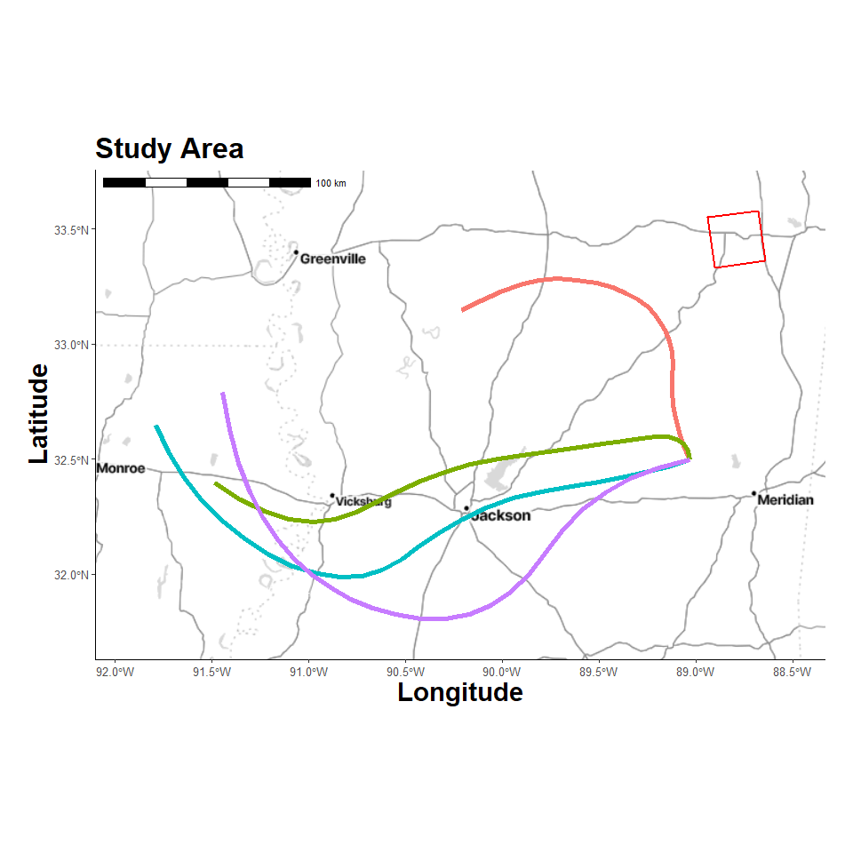

Dispersian Trajectories
4/13/25
- Libraries
- Custom Functions
- Timeout Duration
- Create Study Area Grid
- Location Map
- Trajectory Model
- Results Table
- Plot Trajectories
Libraries
Hide code
library(tidyverse)
library(here)
library(ggmap)
library(ggspatial)
library(sf)
library(terra)
library(gt)
library(pals)
library(splitr)
# devtools::install_github("rich-iannone/splitr")Custom Functions
Hide code
source(here("R/utilities.R"))
source_dir(here("R"))Timeout Duration
To limit meteorological data download times.
Hide code
getOption("timeout")[1] 60Hide code
options(timeout=10000)Create Study Area Grid
Choosing an arbitrary geographic point. It will serve as the emission point source location and be used to define study area extent.
Hide code
source_origin <- c(-88.7904, 33.4555) # Miss State Univ
timezone_utc <- get_timezone_utc(source_origin)Loading required package: lutzHide code
user_projection <- "+proj=utm +zone=18 +datum=WGS84 +units=m +no_defs"
grid_raster <- create_spatraster_grid(source_origin, user_projection) # projected
grid_raster_geo <- create_spatraster_grid_geo(source_origin) # no projLocation Map
Register Stadia Maps API to pull background images.
Hide code
map_api <- yaml::read_yaml(here("local", "secrets.yaml"))
register_stadiamaps(key = map_api$stadi_api)Vicinity around source.
Hide code
map_plot <- map_grid(grid_raster)ℹ © Stadia Maps © Stamen Design © OpenMapTiles © OpenStreetMap contributors.
Coordinate system already present. Adding new coordinate system, which will
replace the existing one.Hide code
map_plot
Trajectory Model
Hide code
trajectory_model <-
create_trajectory_model() %>%
add_trajectory_params(
traj_name= "traj_1",
lon = source_origin[1], # long
lat = source_origin[2], # lat
height = 5, # height above ground (m)
duration = 24,
days = "2020-02-16",
daily_hours = c(0, 6, 12, 18), # when to run sims
model_height = 15000,
direction = "forward",
extended_met = TRUE,
met_type = "nam12",
met_dir = here("local/traj"),
exec_dir = here("local/traj")
) %>%
add_trajectory_params(
traj_name= "traj_2",
lon = source_origin[1], # long
lat = source_origin[2], # lat
height = 5, # height above ground (m)
duration = 24,
days = "2020-02-16",
daily_hours = c(0, 6, 12, 18),
model_height = 25000,
direction = "forward",
extended_met = TRUE,
met_type = "nam12",
met_dir = here("local/traj"), # inputs
exec_dir = here("local/traj") # outputs
) %>%
run_model()Hide code
# save
saveRDS(trajectory_model, here("local/nam12/trajectory_model.rds"))Hide code
# load saved run
trajectory_model <- readRDS(here("local/nam12/trajectory_model.rds"))
class(trajectory_model)[1] "trajectory_model"Results Table
The interesting outputs are recorded to a datatable in model$traj_df.
Hide code
traj_out <- trajectory_model$traj_df
dim(traj_out) [1] 100 21Hide code
names(traj_out) [1] "run" "receptor" "hour_along" "traj_dt" "lat"
[6] "lon" "height" "traj_dt_i" "lat_i" "lon_i"
[11] "height_i" "pressure" "theta" "air_temp" "rainfall"
[16] "mixdepth" "rh" "sp_humidity" "h2o_mixrate" "terr_msl"
[21] "sun_flux" Hide code
head(traj_out)# A tibble: 6 × 21
run receptor hour_along traj_dt lat lon height
<int> <int> <int> <dttm> <dbl> <dbl> <dbl>
1 1 1 0 2020-02-16 00:00:00 32.5 -89.0 5
2 1 1 1 2020-02-16 01:00:00 32.6 -89.1 4.4
3 1 1 2 2020-02-16 02:00:00 32.6 -89.1 4.2
4 1 1 3 2020-02-16 03:00:00 32.7 -89.1 4.3
5 1 1 4 2020-02-16 04:00:00 32.7 -89.1 4.9
6 1 1 5 2020-02-16 05:00:00 32.8 -89.1 5.9
# ℹ 14 more variables: traj_dt_i <dttm>, lat_i <dbl>, lon_i <dbl>,
# height_i <dbl>, pressure <dbl>, theta <dbl>, air_temp <dbl>,
# rainfall <dbl>, mixdepth <dbl>, rh <dbl>, sp_humidity <dbl>,
# h2o_mixrate <dbl>, terr_msl <dbl>, sun_flux <dbl>Plot Trajectories
Hide code
traj_plot <- map_grid2(grid_raster, traj_out, group_col = "run", vector_type = "line", line_size = 2)
traj_plot